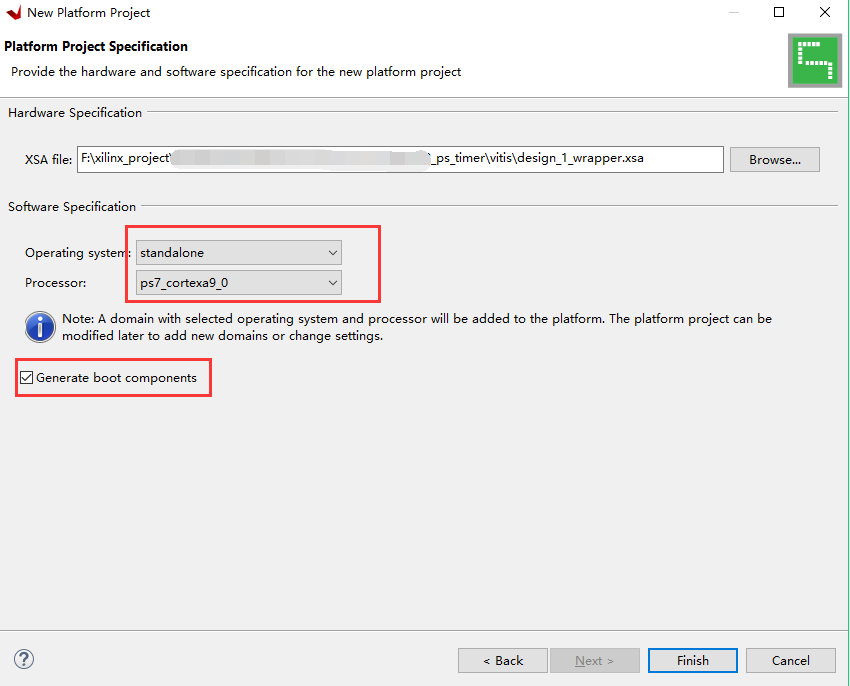

PS点亮PL的LED灯¶
实验VIvado工程为“ps_axi_led”。
使用zynq最大的疑问就是如何把PS和PL结合起来使用，在其他的SOC芯片中一般都会有GPIO，本实验使用一个AXI GPIO的IP核，让PS端通过AXI总线控制PL端的LED灯，实验虽然简单，不过可以让我们了解PL和PS是如何结合的。
Vivado工程建立¶
建立一个名为“ps_axi_led”Vivado工程，表示PS通过AXI总线控制LED灯
创建一个Block设计

添加ZYNQ处理器

配置Bank电平标准，使能串口
{kind=link}
配置DDR3型号为“MT41J256M16 RE-125”
{kind=link}
添加一个AXI GPIO的IP 核

双击刚才添加的“axi_gpio_0”配置参数

选择“All Outputs”，因为这里控制LED，只要输出就可以了，“GPIO Width”填4，控制4颗LED，点击OK

点击“Run Connection Automation”，可以完成部分自动连线
{kind=link}
选择要自动连接的端口，这里全选，点击OK
{kind=link}
点击“Run Block Automation”
{kind=link}
点击“OK”

点击“Optimize Routing”，可以优化布局

修改GPIO端口的名称
{kind=link}
名称修改为leds

创建HDL文件
{kind=link}
点击“OK”
{kind=link}
在生成的Verilog文件中，可以看到有个“leds_tri_o”的输出端口，要为他们分配管脚

XDC文件约束PL管脚¶
创建一个新的xdc约束文件

文件名称为led

led.xdc添加一下内容，端口名称一定要和顶层文件端口一致
set_property IOSTANDARD LVCMOS15 [get_ports {leds_tri_o[0]}] set_property IOSTANDARD LVCMOS15 [get_ports {leds_tri_o[1]}] set_property IOSTANDARD LVCMOS15 [get_ports {leds_tri_o[2]}] set_property IOSTANDARD LVCMOS15 [get_ports {leds_tri_o[3]}] set_property PACKAGE_PIN F5 [get_ports {leds_tri_o[0]}] set_property PACKAGE_PIN E5 [get_ports {leds_tri_o[1]}] set_property PACKAGE_PIN G5 [get_ports {leds_tri_o[2]}] set_property PACKAGE_PIN G6 [get_ports {leds_tri_o[3]}] |
Vitis程序编写¶
生成bit文件

导出硬件

因为要用到PL，所以选择“Include bitstream”，点击“OK”

运行Vitis

与前面的Hello World实验不同，我们只建立Platform工程

填入工程名字，点击Next

点击“Create a new platform hardware(XSA)，软件已经提供了一些板卡的硬件平台，但对于
我们自己的硬件平台，可以选择browse

选择XSA文件

保持默认，点击Finish
{kind=link}
面对一个不熟悉AXI GPIO，我们如何控制呢？我们可以尝试一下Vitis自带的例程
点开platform.spr，并点开BSP

找到“axi_gpio_0”,这里可以点击“Documentation”来看相关文档，这里就不演示，点击“Import Examples”
{kind=link}
在弹出的对话框中有多个例程，从名称中可以猜个大概，这里选第一个“xgpio_example”

可以看到例程比较简单，短短几行代码，完成了AXI GPIO的操作

里面用到很多GPIO相关的API函数，通过文档可以了解详细，也可以选中该函数，按“F3”查看具体定义。如果有了这些信息你还不能理解如何使用AXI GPIO，说明你需要补充C语言基础。
下载调试¶
虽然Vitis可以提供一些例程，但有一部分例程是需要自己修改的，这个简单的LED例程就不修改了，尝试运行一下，发现不能达到预期效果，甚至提示一些错误。
{kind=link}
前面的教程已经提到，“Run As”最好复位系统，有PL的设计要“Program FPGA”，如果你的PL多次修改，别忘了重新导出硬件。按照下图配置后再次运行，可以看到开发板LED1快速闪烁。
{kind=link}
修改代码让4个LED灯都闪烁
{kind=link}
实验总结¶
通过实验我们了解到PS可以通过AXI总线控制PL，但视乎没有体现出ZYNQ的优势，因为对于控制LED灯，无论是ARM还是FPGA，都可以轻松完成，但是如果把LED换成串口呢，控制100路串口通信，8路以太网等应用，我想还没有哪个SOC能完成这种功能，只有ZYNQ可以，这就是ZYNQ和普通SOC的不同之处。
ZYNQ-7000开发平台 FPGA教程 - Alinx官方网站